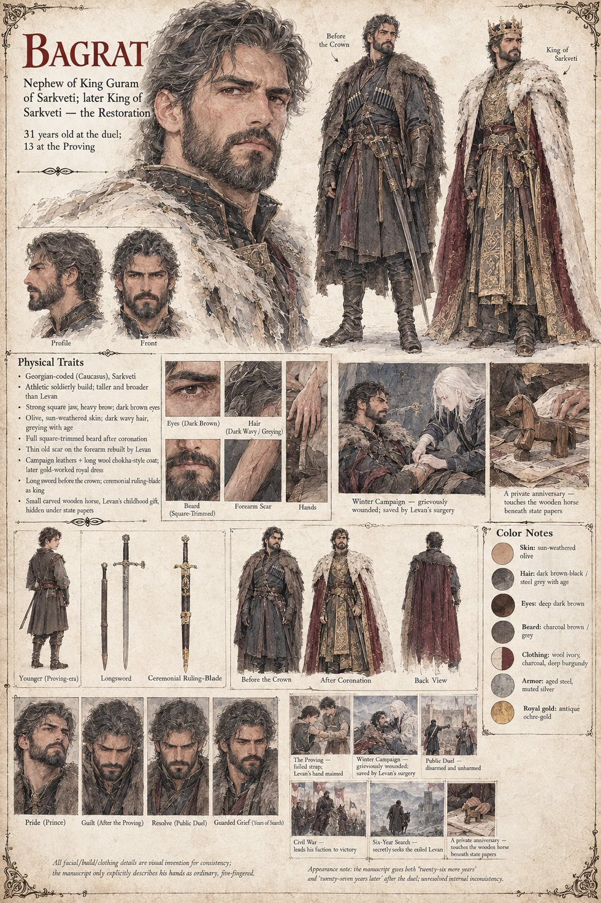

Bagrat
Guram's nephew · later King of Sarkveti · 13 at the Proving, 31 at the duel · reigns 26 more years
The orphaned son of King Guram's brother, taken by a fever with both parents in one winter, and raised alongside Levan, who taught him to swim in the cold river below Tavgora's walls. Thirteen at the Proving, when the strap on his blade gives and cuts his cousin's hand, he becomes the prince still standing: the temple seals a provisional entry for him within the week. He leads the answer to the Vashtir raids, takes an arrow low and wrong in the dark and a fall from a horse onto rock, and is carried home over eight days with his sword arm swollen black to the elbow, until Levan saves it.
He cannot repay the debt. He offers the throne, then a duchy, a stipend and a title invented for the occasion, and is refused every time by a man who wants nothing. Crowned and unable to look at his own five ordinary fingers, he challenges Levan to the Answer, unwrapped steel in the open hall, and loses to mercy a second time: disarmed, unmarked, and spared. He kneels in a corridor behind the northern pillar, builds the entire righteous case in a single sleepless night from a sentence of Demna's, and petitions for the Writ of Examination without reading the paragraph beneath it. He rules for twenty-six more years, spends nearly six of them quietly searching every unmapped fold of the western range, and keeps a small carved wooden horse Levan made him in a drawer under the state papers.
The sheet draws him taller and broader than Levan, with dark wavy hair going grey, a square-trimmed beard after the coronation and a thin scar on the forearm Levan rebuilt; its own footnote says all of this is visual invention, since the manuscript describes only his ordinary, five-fingered hands.
“Then let us see if mercy can parry.”
Appears In

Related Subjects


Related Records

The Proving: a strap that was re-buckled twice gives way, and four inches of real steel come down across Levan's raised left hand. It is Bagrat, not Levan, who screams, dropping his own blade to catch his cousin before he falls.

The northern answer to the Vashtir raids, led by Bagrat because a kingdom that cannot agree on its king can still agree on who should be sent to freeze on its behalf: a Vashtir arrow taken low and wrong in the dark, a fall from a startled horse onto rock, and eight days on a litter to come.

Bagrat behind the hall's northern pillar after the duel: his knees strike stone before he decides to kneel, both ordinary hands pressed flat over a face no one but the corridor's cold walls will see uncomposed. He straightens his collar before he walks back out.

Tavgora's outer wall goes to Bagrat's siege engines after Vazha's faction has refused three separate offers of surrender. The engines are brought up on the nineteenth day of Lorren, and Bagrat does not go to watch them.